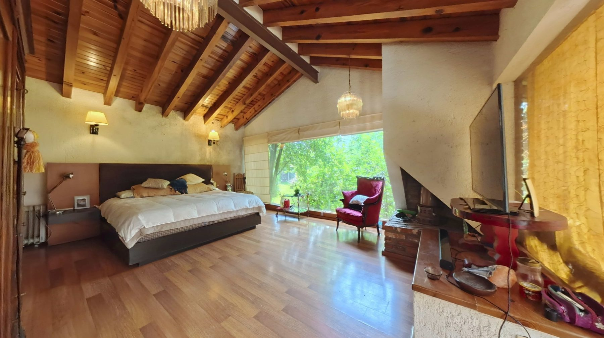
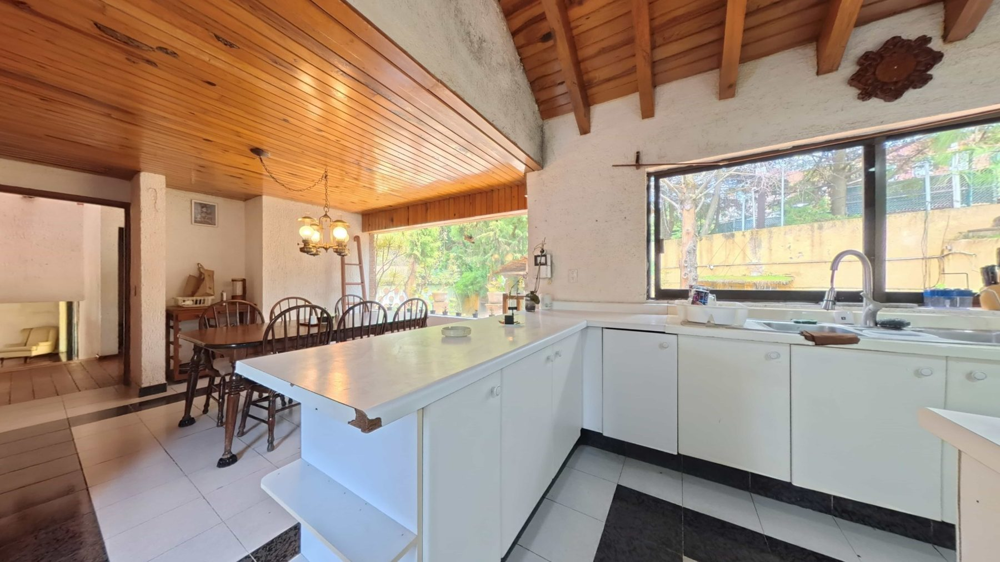
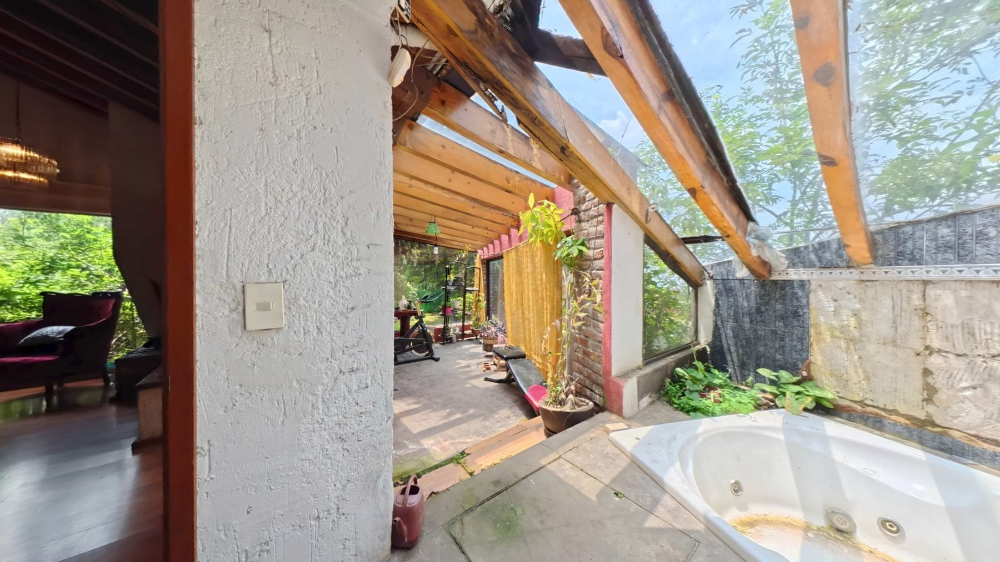
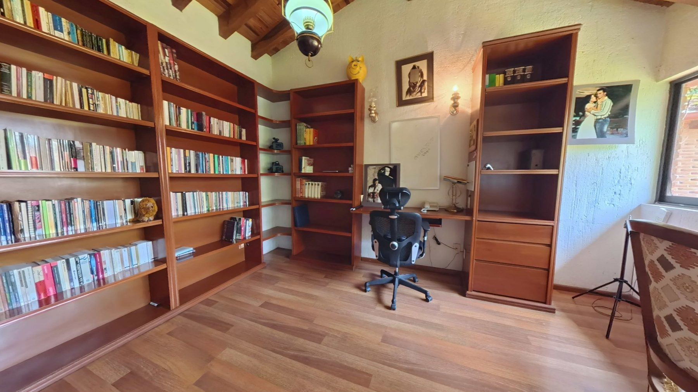
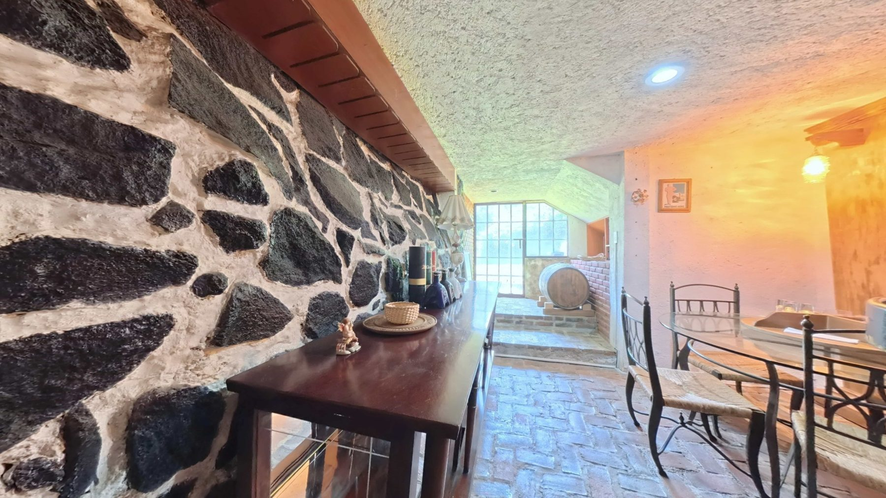
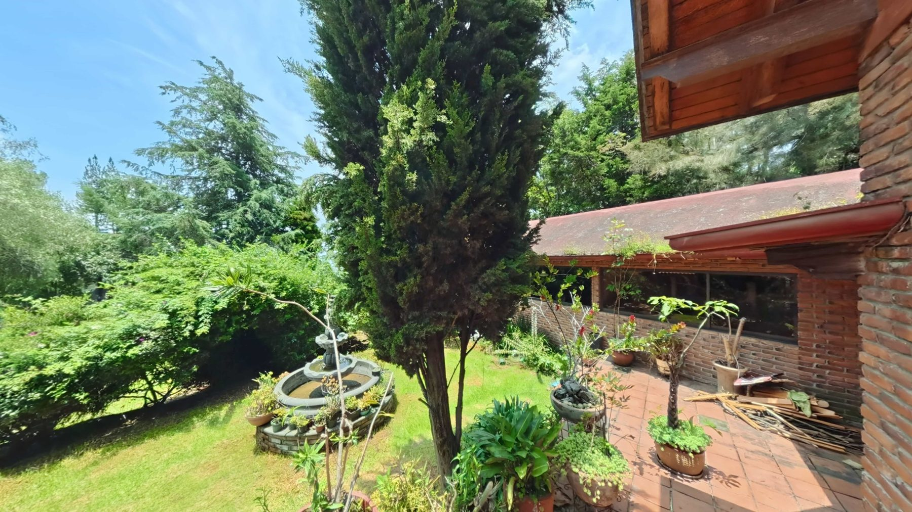
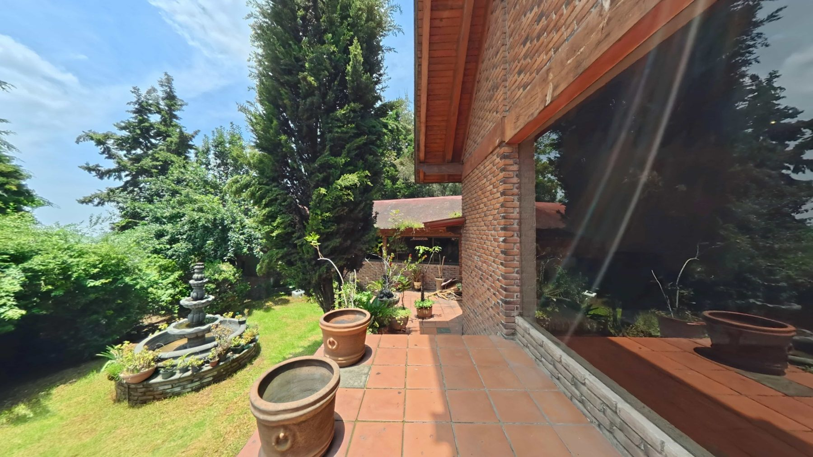
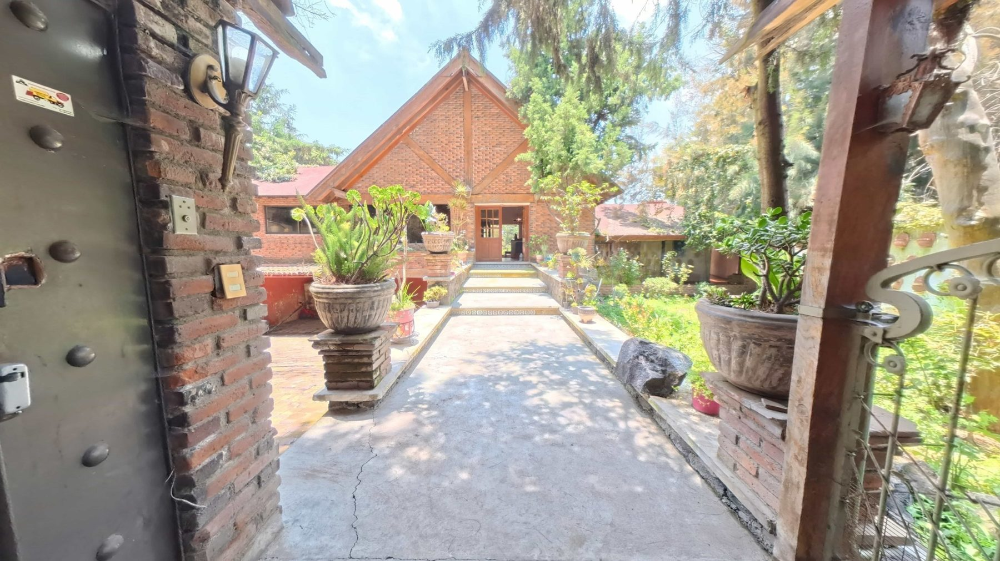

Estancia principal
Amplia sala con chimenea, grandes ventanales y una atmósfera cálida que conecta visualmente con el jardín y las áreas exteriores.

Magdalena Petlacalco · Tlalpan · Ciudad de México
$11,900,000 MXN
Descubre una residencia de carácter cálido, rodeada de vegetación y diseñada para disfrutar espacios amplios, privacidad y una conexión privilegiada con el entorno.
Ubicada en Magdalena Petlacalco, Tlalpan, esta propiedad combina arquitectura en madera y ladrillo, jardín privado, terrazas y áreas pensadas para convivir, descansar y disfrutar cada rincón.
Amplia sala con chimenea, grandes ventanales y una atmósfera cálida que conecta visualmente con el jardín y las áreas exteriores.
Cocina equipada con isla central, amplio espacio de trabajo y distribución funcional para la vida diaria y reuniones familiares.
Espacio privado con jacuzzi, excelente iluminación natural y vista hacia el entorno arbolado de la propiedad.
Jardín privado, terrazas y áreas exteriores pensadas para convivir, descansar y disfrutar del entorno natural de Magdalena Petlacalco.
Explora los espacios interiores de esta residencia en Magdalena Petlacalco, Tlalpan.






Explora cada espacio de manera interactiva y conoce la distribución del departamento antes de agendar tu visita.
Iniciar recorrido 360°
Tectipac #24
La Magdalena Petlacalco
Tlalpan, Ciudad de México
Una ubicación residencial rodeada de naturaleza, con un ambiente tranquilo y privado al sur de la Ciudad de México.

Consulta la ficha visual de esta residencia y descubre sus características principales, recorrido 360°, galería, ubicación y datos de contacto.
Ver Property Passport